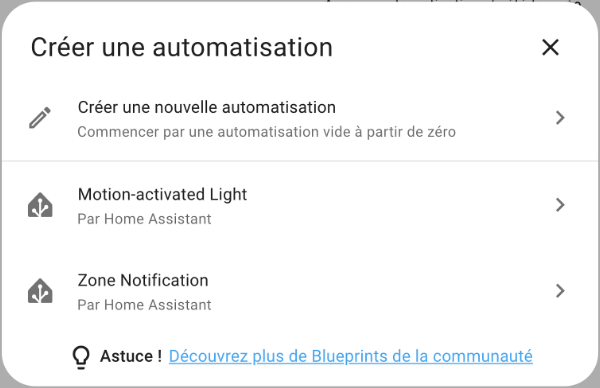
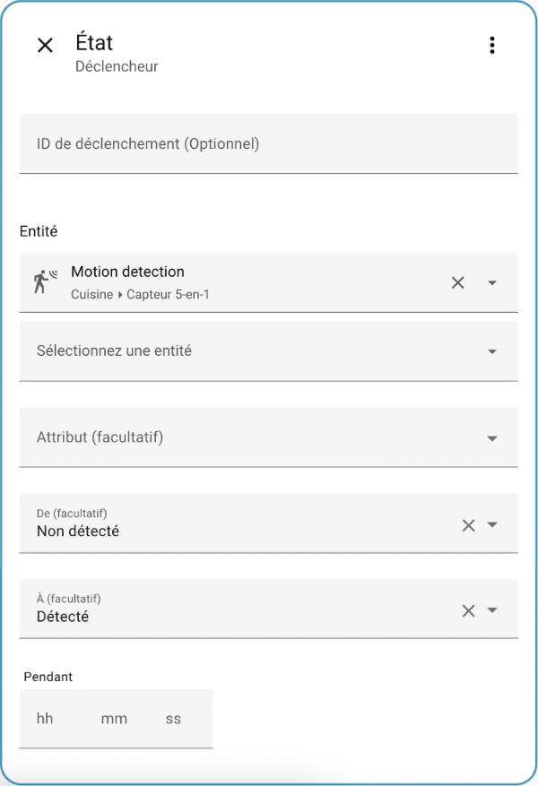
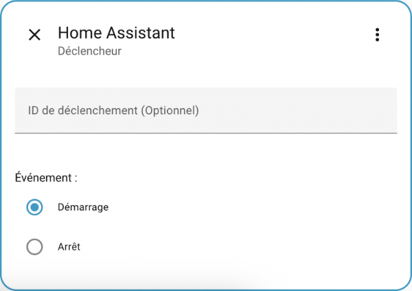
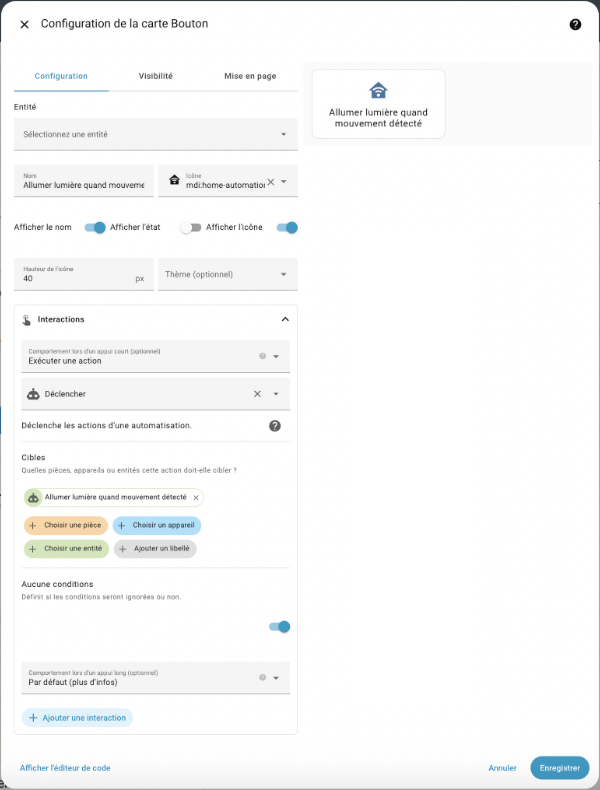
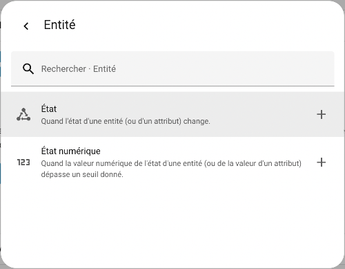
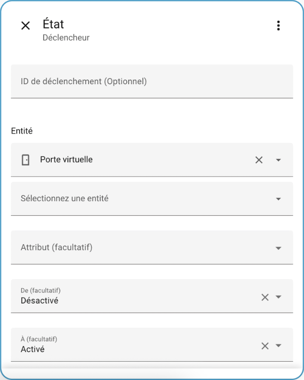
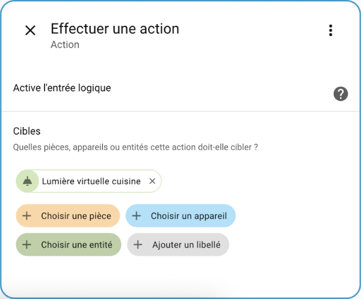
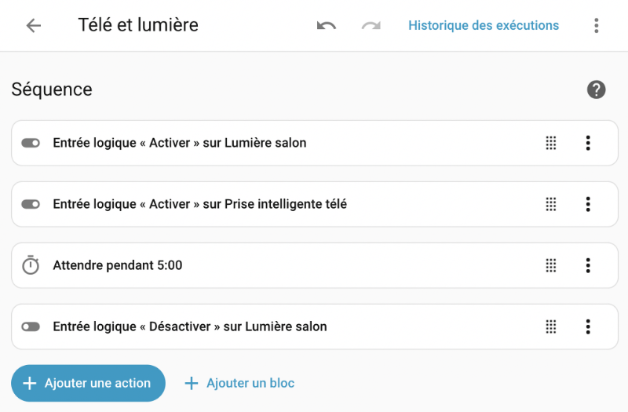

74. Les automatisations Home Assistant¶
74.1 Ajouter une automatisation à l'aide de l'interface graphique¶
Les automatisations (en anglais : automations) permettent de déclencher une ou plusieurs actions quand un ou plusieurs déclencheurs surviennent. Par exemple, il est possible d'allumer la lumière quand un mouvement est détecté.
Un scénario plus poussé pourrait allumer la lumière et envoyer une notification quand un mouvement est détecté après minuit.
Pour ajouter une automatisation à l'aide de l'interface graphique de Home Assistant :
- Rendez-vous dans le menu Paramètres / Automatisations et scènes / Onglet Automatisations.
- Cliquez sur Créer une automatisation puis Créer une nouvelle automatisation.

Vous obtenez l'écran de configuration de l'automatisation avec ses zones Quand, Et si et Alors faire.

Déclencheurs : Quand¶
Dans la zone Quand, cliquez sur Ajouter un déclencheur puis choisissez le type du déclencheur.
Dans le cas d'une automatisation qui allume la lumière quand un mouvement est détecté, c'est le changement d'état d'une entité qui lancera l'action. Choisissez donc Entité puis État.
Vous devez spécifier quelle entité lancera l'action et dans quel état elle doit être.
Ici, c'est le détecteur de mouvement du détecteur 5-en-1 qui doit passer de l'état non détecté à l'état détecté.
Notez que si vous n'entrez rien dans les zones De et À, le déclenchement se produira dès qu'il y a un changement d'état, peu importe lequel.
La zone Pendant (ou for: en YAML) indique que le déclencheur doit avoir été dans cet état pendant une durée minimale pour être pris en compte.

Déclenchement lorsqu'une valeur numérique est > ou <¶
Si le déclencheur nécessite de vérifier si une valeur numérique est supérieure ou inférieure à une autre valeur, vous pouvez utiliser un déclencheur de type État numérique.
L'interface vous offrira d'entrer la valeur au-dessus de laquelle ou au-dessous de laquelle l'entité doit être.

Déclenchement lors du démarrage de Home Assistant¶
Si vous désirez que l'automatisation se lance automatiquement au démarrage de Home Assistant, vous devez choisir le déclencheur nommé Home Assistant dans la catégorie Autres déclencheurs.

Travailler avec plusieurs déclencheurs¶
Vous pouvez ajouter plusieurs déclencheurs. L'action sera exécutée si l'un OU l'autre des déclencheurs est activé, par exemple si la porte est ouverte OU si un mouvement est détecté.
Conditions : Et si¶
Il est possible d'ajouter une ou plusieurs conditions en plus du ou des déclencheurs.
Une condition est très semblable à un déclencheur. Cependant, la condition n'est évaluée qu'une fois que l'automatisation a été déclenchée.
Lorsqu'il y a une condition, l'action sera exécutée si un des déclencheurs est évalué à true ET si la condition est évaluée à true.
Par défaut, s'il y a plusieurs conditions, l'action sera exécutée si un des déclencheurs est évalué à true ET si TOUTES les conditions sont évaluées à true.
(déclencheur1 OU déclencheur2) ET condition1 ET condition2
Dans le cas où il y a des conditions de type OU :
(déclencheur1 OU déclencheur2) ET (condition1 OU condition2)
Ceci est expliqué avec d'autres mots dans la documentation de Home Assistant1 :
When any of the automation’s triggers becomes true (trigger fires), Home Assistant will validate the conditions, if any, and call the action.
Remarquez que si vous désirez qu'une automatisation ne puisse avoir lieu que certains jours de la semaine, il faut choisir Heure et lieu.


Nous n'ajouterons pas de condition dans cet exemple.
Actions : Alors faire¶
Il est maintenant temps de spécifier l'action ou les actions à exécuter par l'automatisation.
Notez qu'il pourrait y avoir plus d'une façon de configurer une même action.
Dans notre exemple, nous allons choisir le type d'action Appareil puisque nous désirons modifier l'état de la prise intelligente qui contrôle la lumière.
Choisissez ensuite quel appareil doit être activé dans la liste déroulante puis l'action qui sera exécutée sur cet appareil (ici : Activer).

Cliquez sur Enregistrer puis donnez un nom significatif à votre automatisation, par exemple « Allumer lumière quand mouvement détecté ».
Passez la main devant le détecteur de mouvements et constatez que la lumière s'allume automatiquement!
Code YAML¶
Une fois l'automatisation sauvegardée, vous verrez qu'elle a été enregistrée au format YAML dans le fichier automations.yaml, qui est d'ailleurs importé dans configuration.yaml.
Fichier automations.yaml
- id: '1666115015224'
alias: Allumer lumière quand mouvement détecté
description: ''
trigger:
- platform: state
entity\_id:
- binary\_sensor.5\_in\_1\_pir\_motion\_sensor\_motion\_detection
from: 'off'
to: 'on'
condition: []
action:
- type: turn\_on
device\_id: f138a74f3ea6ca3212b26d1e92b8cb10
entity\_id: light.dimmable\_smart\_plug
domain: light
mode: single
Source¶
- « Automation Trigger ». Home Assistant. https://www.home-assistant.io/docs/automation/trigger
Pour plus d'information¶
« Automating Home Assistant ». Home Assistant. https://www.home-assistant.io/getting-started/automation/
« Automation Trigger ». Home Assistant. https://www.home-assistant.io/docs/automation/trigger/
« Automation conditions ». Home Assistant. https://www.home-assistant.io/docs/scripts/conditions/
« Automation actions ». Home Assistant. https://www.home-assistant.io/docs/automation/action/
74.2 Lancer une automatisation à l'aide d'un bouton¶
Il est intéressant d'ajouter un bouton,bouton au tableau de bord pour tester une automatisation. À ce moment, un clic sur le bouton s'ajoutera aux déclencheurs de l'automatisation.
Il est possible de configurer le bouton pour tenir compte ou non des conditions de l'automatisation.
Pour y arriver :
- Éditez le tableau de bord et choisissez dans quelle section vous désirez ajouter la carte. Pour ma part, j'aime bien regrouper les boutons de mes automatisations dans une section nommée Automatisations.
- Ajoutez une carte de type bouton.
- Pour ce qu'on veut faire ici, il est inutile de choisir une entité au début de la carte. S'il y en a une qui apparaît par défaut, cliquez sur le X pour la supprimer.
- Si désiré, indiquez quel nom doit apparaître sur la carte.
- Si désiré, choisissez une icône.
- Cliquez sur Interactions.
- Dans la zone Comportement lors d'un appui court, sélectionnez Exécuter une action.
- Dans la case Action, choississez automation: Déclencher (Automation: Trigger).
- Cliquez ensuite sur Choisir une entité et sélectionnez l'automatisation désirée.
- Si vous désirez que le bouton lance l'automatisation même si les conditions de l'automatisation ne sont pas respectées, activez l'option Aucune condition.

Voici ce que ceci donnera en YAML :
YAML
show\_name: true
show\_icon: true
type: button
name: Allumer lumière quand mouvement détecté
icon: mdi:home-automation
tap\_action:
action: perform-action
perform\_action: automation.trigger
target:
entity\_id: automation.allumer\_lumiere\_quand\_mouvement\_detecte
data:
skip\_condition: true
icon\_height: 40px
74.3 Les capteurs virtuels dans les automatisations¶
Capteur virtuel comme déclencheur¶
La beauté avec les automatisations, c'est que lorsqu'il y a plusieurs déclencheurs, Home Assistant exécutera l'action si l'un OU l'autre est activé.
Il est donc possible de créer l'automatisation avec comme déclencheur le capteur réel puis d'ajouter le capteur virtuel comme second déclencheur. Ceci permettra de tester l'automatisation sans avoir à attendre que le capteur réel change d'état.
Le déclenchement à l'aide d'un capteur virtuel est réalisé à l'aide de la même technique que pour un capteur réel : il faut choisir le type Entité puis État (ou état numérique selon le besoin).

Vous aurez ensuite la possibilité de choisir le capteur virtuel puis, si requis, le changement d'état qui doit déclencher l'automatisation (De et À).

Capteur virtuel dans une action¶
L'état d'un capteur virtuel peut également être modifié à partir d'une automatisation.
Pour se faire, il faut utiliser le type d'action Entrées puis choisir le type d'entrée, par exemple Entrée logique. Home Assistant vous proposera ensuite les actions possibles selon le type d'entrée sélectionné.
Dans la zone Cibles, cliquez sur Choisissez une entité et vous aurez la possibilité de sélectionner le capteur virtuel.

74.4 Script vs automatisation¶
Sous Home Assistant, un script consiste en une série d'actions à exécuter.
Un script pourrait, par exemple, gérer l'éclairage par rapport à la télévision : allumer la lumière du salon, allumer le téléviseur puis, après 5 minutes, éteindre la lumière du salon.
Les occupants auront donc eu le temps de profiter de la clarté pour s'installer devant le téléviseur avant que la lumière ne s'éteigne afin de ne pas gêner la vision.
Script vs automatisation¶
Une automatisation, pour sa part, est un processus plus ou moins complexe qui comprend :
- un ou plusieurs déclencheurs;
- optionnellement une ou plusieurs conditions;
- une ou plusieurs actions.
On pourra avoir par exemple une automatisation qui allume la lumière quand Annie arrive à la maison entre 16h et 22h :
- déclencheur : Annie arrive à la maison
- condition : entre 16h et 22h
- action : allumer la lumière
Une automatisation pourrait même utiliser un script comme action :
- déclencheur : Mouvement détecté dans le salon
- condition : après le coucher du soleil
- action : exécuter le script qui gère l'éclairage par rapport à la télévision
Création d'un script à l'aide de l'éditeur graphique¶
Comme pour les automatisations, les scripts peuvent être écrits à l'aide d'un éditeur graphique ou directement en YAML.
Pour accéder à l'éditeur graphique, rendez-vous dans Paramètres / Automatisations et scènes / Onglet Scripts / Créer un script / Créer un nouveau script.
Vous pouvez maintenant déterminer les actions à réaliser ainsi que les blocs qui permettent, par exemple, d'attendre un certain temps, de répéter un certain nombre de fois, etc.
Il faut ajouter une séquence (ou un bloc) pour chaque action à réaliser.
Dans cet exemple, j'ai travaillé avec des virtuels.

Création d'un script à l'aide de YAML¶
Si vous préférez travailler directement en YAML, vos scripts seront créés à l'aide de l'intégration Scripts.
Ils doivent répondre à la syntaxe de Script de Home Assistant.
Leur code sera écrit dans le fichier scripts.yaml.
Voici un exemple de script :
Fichier scripts.yaml
tele\_et\_lumiere:
sequence:
- action: input\_boolean.turn\_on
metadata: {}
data: {}
target:
entity\_id: input\_boolean.lumiere\_salon
- action: input\_boolean.turn\_on
metadata: {}
target:
entity\_id: input\_boolean.prise\_intelligente\_tele
- delay:
hours: 0
minutes: 5
seconds: 0
milliseconds: 0
- action: input\_boolean.turn\_off
metadata: {}
data: {}
target:
entity\_id: input\_boolean.lumiere\_salon
alias: Télé et lumière
description: ''
Lancer un script¶
Contrairement à l'automatisation, le script ne peut pas être déclenché automatiquement.
Une fois l'action lancée, sa séquence peut comporter l'attente d'un déclencheur mais il faut d'abord que le script ait été lancé.
Pour lancer un script, vous avez plusieurs options, notamment :
- À l'aide du menu Paramètres / Automatisations et scènes / onglet Scripts / clic sur les trois points verticaux à droite du script désiré / Exécuter.
- En utilisant le script comme action dans une automatisation (Autres actions / Script / Exécuter).
- Sur le tableau de bord, à l'aide d'une carte de type bouton qui effectue l'action de lancer le script.
74.5 Trace d'une automatisation¶
Quand une automatisation est exécutée, Home Assistant conserve une trace de ce qui s'est passé.
Pour voir cette trace, rendez-vous dans Paramètres / Automatisations et scènes puis cliquez sur l'automatisation désirée.
Cliquez sur Historique des exécutions pour voir la trace de la dernière exécution de l'automatisation.
Home Assistant vous affiche alors ce qui a été exécuté.
Vous pouvez cliquer sur les différents cercles pour obtenir de l'information sur chacun.
Dans cet exemple, on voit que l'action n'a pas eu lieu puisque le moment où le déclencheur a eu lieu (17h13) ne respectait pas la condition (entre 18h et 22h).

Les différents onglets montrent d'autres détails, à vous de les explorer.
Pour plus d'information¶
« Troubleshooting Automations ». Home Assistant. https://www.home-assistant.io/docs/automation/troubleshooting/